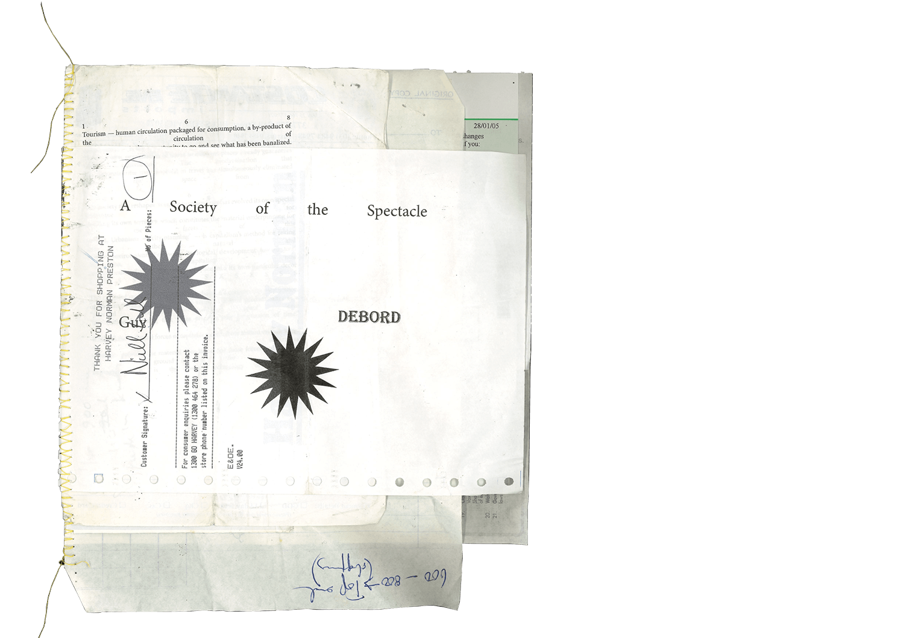
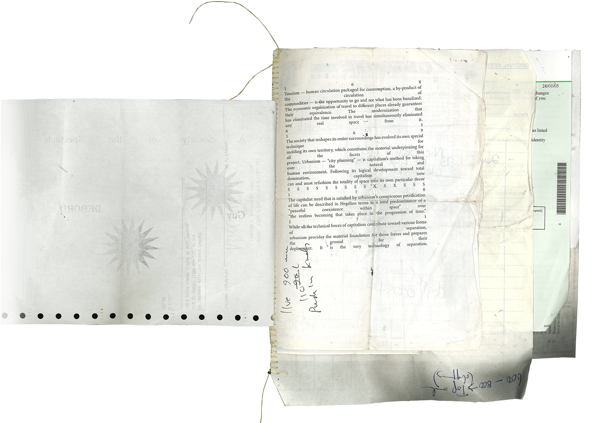
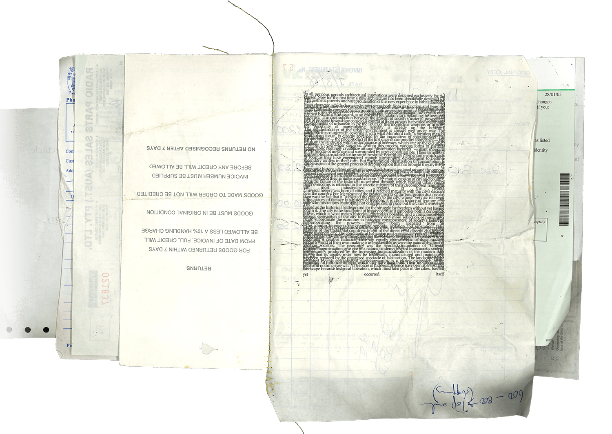
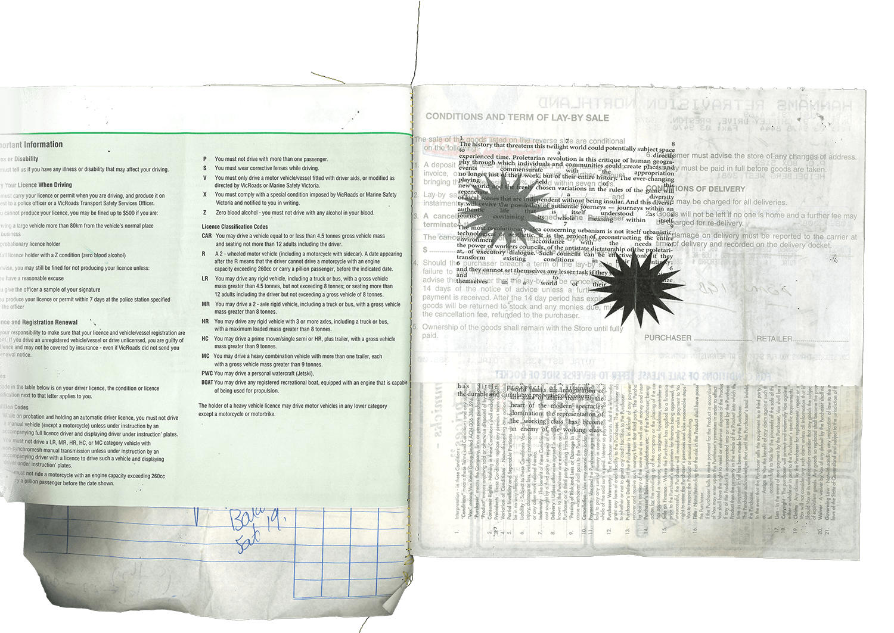
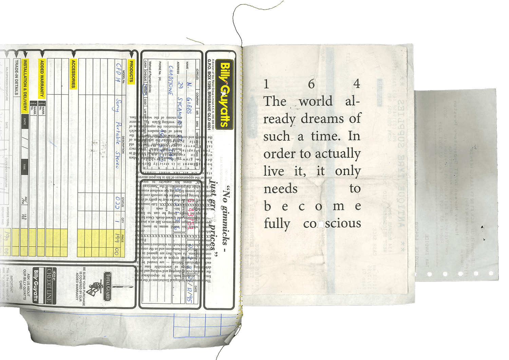
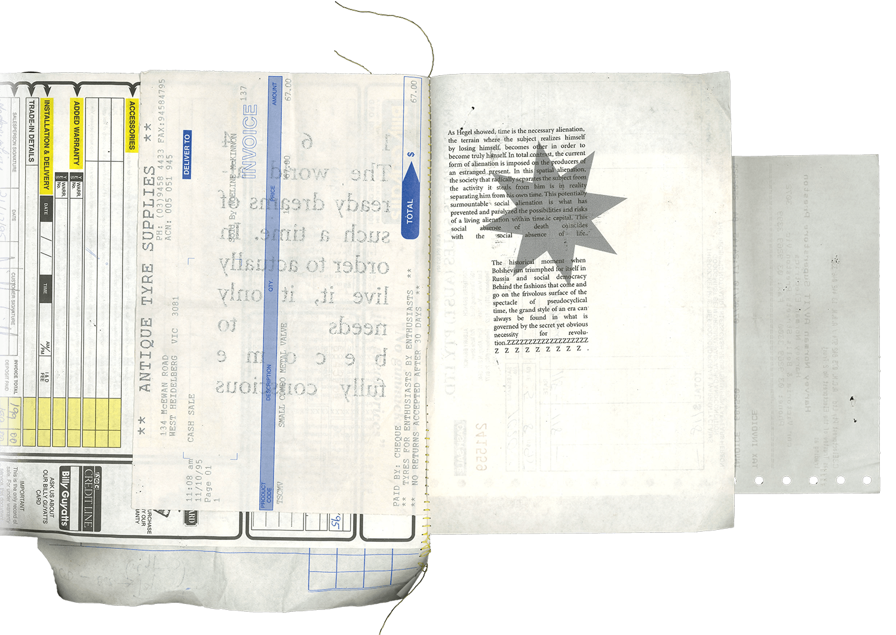
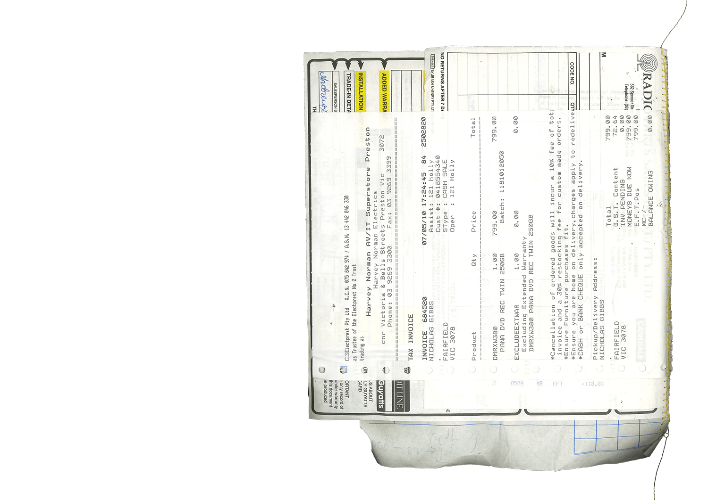

Couldn't/Wouldn't/Shouldn't
A response to Neil McGuire's brief found in Taking a Line for a Walk: 'Surprise: Design and make a book from any material that couldn't/wouldn't/shouldn't be used to make a book'. The book repurposes invoices and holds chapter 4 of Guy Debord's ' The Society of the Spectacle'.
A response to Neil McGuire's brief found in Taking a Line for a Walk: 'Surprise: Design and make a book from any material that couldn't/wouldn't/shouldn't be used to make a book'. The book repurposes invoices and holds chapter 4 of Guy Debord's ' The Society of the Spectacle'.






